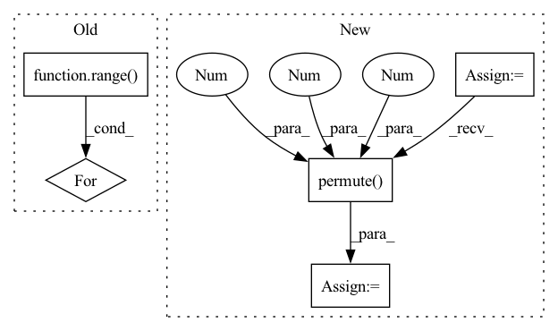

Pattern ID :9939
Before Change
batch_size, state_len, seq_len).to(self.device)
for i in range(state_len):
for j in range(seq_len):
for k in range( batch_size) :
attn_energies[k, i, j] = self.score(
out_state[k][i], history[k][j])
return F.softmax(attn_energies, dim=2)
After Change
history = history.permute(0, 2, 1) // batch_size * hidden_size * history_len
attn_energies = torch.bmm(out_state, history)
elif self.method == "general":
history = self.attn(history)
history = history.permute(0 , 2 , 1 )
attn_energies = torch.bmm(out_state, history)
return F.softmax(attn_energies, dim=2)
In pattern: SUPERPATTERN
Frequency: 3
Non-data size: 5
Instances Fragment ID: 35583262
Project Name: libcity/bigscity-libcity
Commit Name: ec61c9cd984d1c86ee715380ed3b65b4222c8d1f
Time: 2021-05-06
Author: 33283819+WenMellors@users.noreply.github.com
File Name: trafficdl/model/trajectory_loc_prediction/DeepMove.py
M Class Name: Attn
N Class Name: Attn
M Method Name: forward(3)
N Method Name: forward(3)
M Parent Class: nn.Module
N Parent Class: nn.Module
M File Name: trafficdl/model/trajectory_loc_prediction/DeepMove.py
N File Name: trafficdl/model/trajectory_loc_prediction/DeepMove.py
M Start Line: 33
M End Line: 43
N Start Line: 38
N End Line: 45
Before Change
if num > 1:
pieces = []
for i in range( 1, num + 1) :
start = piece_length * (i - 1)
end = piece_length * i
piece = spec[:, start:end]
After Change
return spec
else:
chunks = torch.split(spec, chunk_size, dim=1)
to_be_masked = torch.stack(list(chunks[:-1]), dim=0).unsqueeze(1)
time_mask(to_be_masked)
freq_mask(to_be_masked)
masked = to_be_masked.squeeze(1).permute(1 , 0 , 2 ) .reshape((spec.shape[0], -1))
return torch.cat([masked, chunks[-1]], dim=1)
Fragment ID: 35583406
Project Name: ivankunyankin/quartznet-asr
Commit Name: 28f999e7cfbefb66c9545f32e76a7454a7432aac
Time: 2021-07-01
Author: IKunyankin@gmail.com
File Name: utils.py
M Class Name: AnonimousClass
N Class Name: AnonimousClass
M Method Name: augment(4)
N Method Name: augment(4)
M Parent Class:
N Parent Class:
M File Name: utils.py
N File Name: utils.py
M Start Line: 57
M End Line: 82
N Start Line: 57
N End Line: 74
Before Change
data = Data(edge_index=edge_index, edge_attr=None, num_nodes=num_nodes)
lambda_max = LaplacianLambdaMax()(data).lambda_max
outputs = []
for time_step in range( num_of_timesteps) :
outputs.append(torch.unsqueeze(self.cheb_conv(x=x[:,:,:,time_step], edge_index=edge_index,
batch = batch_size, lambda_max=lambda_max), -1))
spatial_gcn = F.relu(torch.cat(outputs, dim=-1)) // (b,N,F,T)After Change
batch = batch_size, lambda_max=lambda_max), -1))
spatial_gcn = F.relu(torch.cat(outputs, dim=-1)) // (b,N,F,T)
"""
tmp = x.permute(2,0,1,3).reshape(num_of_vertices, in_channels, num_of_timesteps*batch_size) // (N_nodes, F_in, B*T_in)
tmp = tmp.permute(2 ,0 ,1 ) // (B*T_in, N_nodes, F_in)
output = F.relu(self.cheb_conv(x=tmp, edge_index=edge_index,
batch = batch_size*num_of_timesteps, lambda_max=lambda_max))
spatial_gcn = output.permute(1,2,0).reshape(num_of_vertices,self.nb_time_filter,batch_size,num_of_timesteps).permute(2,0,1,3) // (B,N_nodes,F_out,T_in) Fragment ID: 35583164
Project Name: benedekrozemberczki/pytorch_geometric_temporal
Commit Name: 509a541a01913f5b45859b801c48b5fd264bd94a
Time: 2021-03-18
Author: He_YX@outlook.com
File Name: torch_geometric_temporal/nn/convolutional/mstgcn.py
M Class Name: MSTGCN_block
N Class Name: MSTGCN_block
M Method Name: forward(4)
N Method Name: forward(4)
M Parent Class: nn.Module
N Parent Class: nn.Module
M File Name: torch_geometric_temporal/nn/convolutional/mstgcn.py
N File Name: torch_geometric_temporal/nn/convolutional/mstgcn.py
M Start Line: 36
M End Line: 41
N Start Line: 44
N End Line: 48